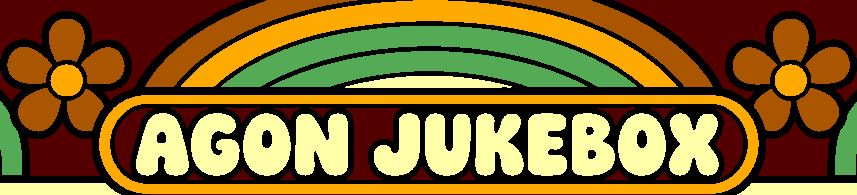
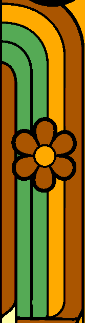

Colors sampled from the original art, one flat fill per cleaned-mask region, using the established Art Deco sampler. All numbered candidates use only actual Agon colors. No gradients or dithering.
1 — Accepted mask only: preserves its exact shape geometry; all excluded dark areas remain black.
2 — Brown backdrop restored: same foreground shapes and colors, plus an explicitly derived dark-brown background mask. This recovers some dark artwork that grayscale thresholding merged with black outlines. The added mask is provisional.
3 — Consistent source colors (suggested): eight source color families, nearest Agon colors in Oklab perceptual space. Keeps related petals/bands consistent and preserves teal better than direct RGB matching. Same accepted foreground geometry; supplementary backdrop and cleared text-shadow areas are explicit additions.
The original and “before Agon mapping” views are references, not palette-compliant candidates. Target previews use nearest neighbor; vector smoothing is still a separate step. State text is cleared; the arrow and nontext controls are retained.
#550000 37.6%#000000 21.6%#ffaa00 12.7%#ffffaa 10.8%#aa5500 9.4%#55aa55 8.0%Candidate 1 PNG · Candidate 2 PNG · Added brown-region mask · Candidate 3 PNG · Consistent color families · Per-shape sampled colors · Method and checks
These remain flat in this worksheet. Broad rainbow bands, rails and record labels give us room to compare a few discrete Agon shade steps later.


{kind=link}
{kind=link}
{kind=link}
{kind=link}